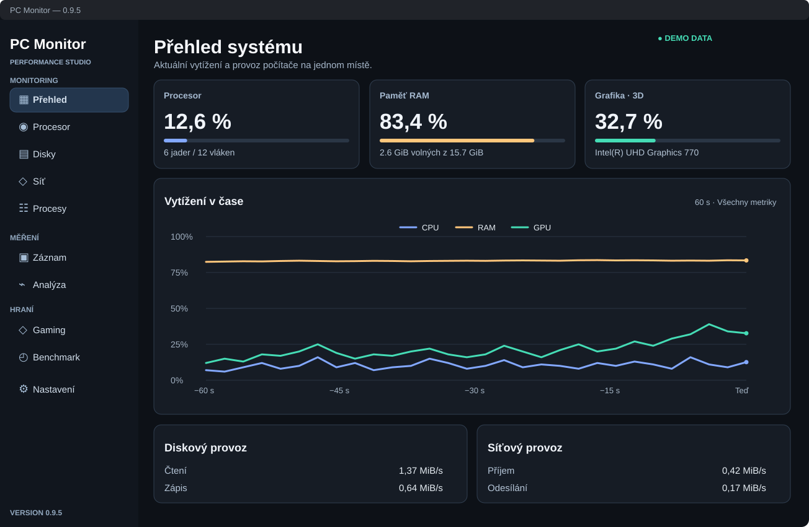

Hardware overview
Track CPU, RAM, GPU 3D activity, storage and network throughput with live charts.
v0.9.7 · GPU HOTFIX CANDIDATE
Real-time hardware monitoring, gaming overlays and frame-time benchmarks in one Windows desktop application. English and Czech interface.
Windows x64 · Portable ZIP · MIT-licensed project · No Python installation required

THE WORKSPACE
Track CPU, RAM, GPU 3D activity, storage and network throughput with live charts.
Find running processes and inspect CPU and memory usage without modifying them.
Keep selected metrics visible in a customizable desktop overlay.
Optional PresentMon capture with present-rate FPS, rolling 1% low and frame intervals.
Record timed frame captures and compare A/B runs, stutter and hitch metrics.
Save local CSV recordings and explore your results without cloud uploads.
QUICK START
The portable beta includes its runtime. No Python installation is needed.
Open Windows release ↗PC-Monitor-v*-Windows-x64.zip from Assets.PC-Monitor.exe. Keep its folders together.The beta is unsigned. Windows may show SmartScreen. Compatibility across Windows 10/11 configurations and real-game capture still need validation.
IN VALIDATION
Version 0.9.7 improves Windows PowerShell GPU sampling, adds WMI fallback for repeated missing readings and records provider errors. The published v0.9.6 may show unavailable GPU utilization on some systems. Check Releases for available builds; final hotfix validation is pending.
Explore the roadmap ↗Try the app, share feedback and report reproducible issues. Temperature monitoring is not included; FPS capture requires authorized ETW access. Exclusive fullscreen overlays may not work.
Report an issue or suggest a feature ↗